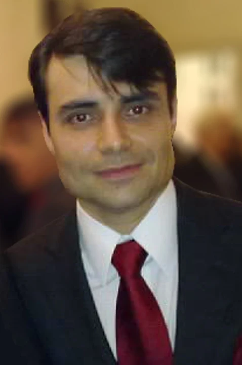
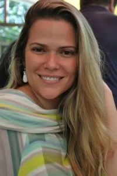

Quem somos
Eles fazem RENDEZVOUS
Em francês, rendez-vous é um encontro marcado. Desde 2012, é isso que o RENDEZVOUS faz: marca encontro com quem faz o vinho e leva o leitor junto.
O nome
No Brasil dos nossos avós, a palavra tinha outra fama, e era endereço que não se dava em voz alta. Em Paris, ela se diz várias vezes por dia, para um café, uma consulta ou uma degustação. Ficamos com o sentido francês.
Quem fala são eles
O RENDEZVOUS nunca foi um blog, e a regra continua a mesma do primeiro dia: o assunto são as pessoas que fazem coisas extraordinárias, e é a voz delas que importa. O enólogo que mostra a argila azul debaixo da vinha, a família que faz vinho dentro dos muros de um clos de novecentos anos, o consultor que mudou o gosto de uma geração.
- Olivier BERROUETPétrus · Pomerol
- François LABETChâteau de La Tour · Clos de Vougeot
- Paul PONTALLIER 1956–2016Château Margaux
- Michel ROLLAND 1947–2026Bordeaux e o mundo
- Caroline FREYLa Lagune · Paul Jaboulet Aîné
- Príncipe Robert de LuxemburgoChâteau Haut-Brion
- Christophe LAMBERTHospices de Beaune, 2015
Paul PONTALLIER, que dirigiu o Château Margaux por 26 anos, morreu em março de 2016. Michel ROLLAND, em março de 2026. Os filmes que fizemos com eles continuam no acervo.
O que publicamos
Como numa revue, os assuntos não envelhecem com a notícia. Uma conversa de 2012 sobre Pétrus continua dizendo muito sobre Pétrus.
Quem assina

Fundador e editor
Wandel DA ROCHA
Franco-brasileiro, vive em Paris há mais de vinte anos. Nesse tempo acompanhou de perto o vinho europeu, nas visitas a produtores e vinhateiros, nas degustações e nos encontros com enólogos e jornalistas. Colabora com a revista Gula, no Brasil.
Criou o RENDEZVOUS em 2012, ao lado de Raïssa, para dividir esses encontros com quem lê em português.

Cofundadora
Raïssa
Esteve à frente do RENDEZVOUS com Wandel de 2012 a 2014, nos anos das primeiras grandes reportagens, de Pétrus ao Clos de Vougeot. Segue apoiando o projeto.